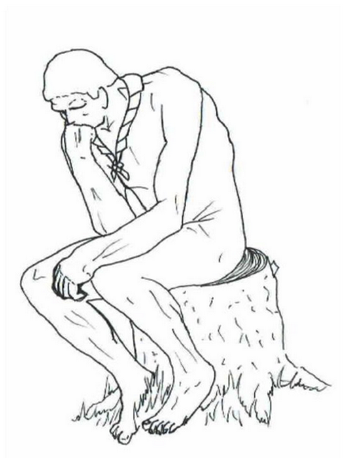

At være på så stor en spejderlejr som WSJ 2019 er en fantastisk oplevelse, men det kan også være en smule overvældende. Ved hver Base Camp er der mulighed for at få en snak med erfarne voksne om de bekymringer og problemer man måtte have. Dette dækker over alt fra det psykologiske til det spirituelle. Disse voksne kaldes Listening Ears. I kan tale om ting med Listening Ears, som I ikke kan eller vil tage op med jeres tropsledere. Vær ikke bange for at spørge efter Listening Ears hvis nødvendigt – det er ligeså vigtigt at tage vare på sin psyke som på sin fysiske krop!
Fordybelse
 På denne side finder du forskellige værktøjer, du kan bruge til at reflektere over ting, du oplever på lejren og spejderarbejdet generelt. Men hvad betyder det at reflektere over noget?
“At reflektere” betyder, at man tænker over de situationer man havner i. Man kan overveje, hvad der har været sjovt, og hvad der ikke har fungeret så godt. Her er det vigtigt at have fokus på, hvad der kunne gøres anderledes. Refleksion kan også være meget personlig. Hvordan oplevede du situationen? Hvordan tror du andre oplevede det? Det er vigtigt at kigge indad en gang imellem og spørge sig selv: Hvordan har jeg det egentligt?
Brug gerne lidt tid hver dag på at reflektere over livet, universet og lejren. Du kan gøre det alene eller sammen med andre, men uanset hvad er det vigtigt, at du er ærlig omkring, hvad du føler og tænker.
God fornøjelse!
Temaet for WSJ 2019 er “Unlock a New World”. Prøv, alene eller sammen med dine spejderkammerater, at overveje hvad det betyder. Har du oplevet noget i løbet af lejren, som passer specielt godt med dette tema?
Overvej også hvordan lejrens tema og dine oplevelser på lejren afspejler verdensspejderorganisationens mission. Synes du, lejren lever op til missionen?
"The Mission of Scouting is to contribute to the education of young people, through a value system based on the Scout Promise and Law, to help build a better world where people are self-fulfilled as individuals and play a constructive role in society."
World Organization of the Scout Movement
Mødet med andre kulturer kan være en overraskende og endda skræmmende affære, men det skal ikke afholde dig fra at møde dem med åbent sind! Hvordan griber man så mange spejdere på så lidt plads an?
Mødet med en fremmed kultur indebærer ofte, at man oplever ting bliver gjort på en anden måde end vi er vant til hjemme i Danmark. Det kan derfor være en god idé at antage den samme tilgangsvinkel som et lille barn. Børn har ofte en nysgerrig og åben tilgang til sin omverden, hvor vi som unge og voksne tit er mere snæversynede og kan have svært ved at forholde os til det uvante.
Så når du ser noget der undrer dig, så gå hen og spørg nysgerrigt ind til hvad folk laver og lyt efter, det kan være at du lærer noget nyt. Lær en ny leg eller smag noget mad du ikke har prøvet før. Alle mennesker – også dem fra andre kulturer – har lyst til at fortælle om, hvad de laver, det er noget vi elsker at gøre som mennesker.
Husk et nysgerrigt og åbent sind. Vi er alle spejdere.
At skulle forholde sig til en anden religion end sin egen kan være en lidt af en opgave nogle gange. Man kan være opdraget ud fra religiøse principper som gennem historien er blevet til ikke-religiøse normer. Det er der ikke noget forkert i, men det er noget at have i mente når man møder andre kulturer, hvor normerne er udviklet fra andre religiøse principper.
Hvis emnet om religiøse forskelle interesserer dig, kan du smutte en tur forbi lejrens ”faith and beliefs”-område, hvor mødet med andre religioner er i højsædet. Religion er et ømtåleligt, tabubelagt emne, som ofte danses om for ikke at træde nogle over tæerne. Prøv i stedet at møde andre religioner med respekt og nysgerrighed, så vil du få en langt større forståelse for den verden, du befinder dig i.
Dette er meget fine ord, men hvad med ateister? Er man som ateist også opdraget ude fra religiøse principper? Hvis religiøse principper er blevet til normen for opdragelse i kulturen, så kan det sagtens være tilfældet.
Efter mødet med andre religioner har du måske lagt mærke til hvor stor variationen indenfor en enkelt religion kan være.
Du har måske lagt mærke til at der er markant forskel på en religions indflydelse på hverdagen - eller sagt på en anden måde - hvor religiøse forskellige individer er. Der er stor forskel på om man er protestantisk kristen der går til julegudstjeneste og som er døbt og konfirmeret, eller om man er protestantisk kristen der også går i kirke hver søndag. Du har måske også lagt mærke til at der inden for en given religion kan være flere ”underudgaver”? Dette kunne inden for kristendommen være protestanter, katolikker eller græske ortodokse for bare at nævne nogle få. Hvorfor ser folk så forskelligt på en religion selvom, at de tror på den samme højere magt? I begge disse tilfælde – den religiøse dybde eller den religiøse variation – er USA et fascinerende land, hvor mængden af forskellige religioner er enorm. Fra indremissionske områder i f.eks. Utah til storbylivets religions-angst i New York. Antallet af amerikanske spejdere på denne lejr giver dig en enestående mulighed for at være nysgerrig. Spørg løs! Overvej, hvad der holder dig tilbage fra at møde andre religiøse perspektiver?
Reflektions materiale
Her er 8 tekster du alene, eller sammen med andre, kan reflektere over i løbet af lejren. Når du besvarer spørgsmålene, er det vigtigt at du er ærlig over for dig selv – hvad mener du egentligt? Skriv evt. dine tanker ned i en notesbog. Prøv også at overveje om materialet minder dig om noget du har oplevet på lejren.
Da rejste en lovkyndig sig og ville sætte Jesus på prøve og spurgte ham: ”Mester, hvad skal jeg gøre for at arve evigt liv?” Han sagde til ham: ”Hvad står der i loven? Hvad læser du dér?” Manden svarede: ”Du skal elske Herren din Gud af hele dit hjerte og af hele din sjæl og af hele din styrke og af hele dit sind, og din næste som dig selv.” Jesus sagde: ”Du har svaret rigtigt. Gør det, så skal du leve.” Men han ville retfærdiggøre sig selv og spurgte Jesus: ”Hvem er så min næste?” Jesus svarede og sagde: ”En mand var på vej fra Jerusalem ned til Jeriko og faldt i hænderne på røvere. De trak tøjet af ham og slog ham, så gik de og lod ham ligge halvdød. Tilfældigvis kom en præst den samme vej; han så manden, men gik forbi. Det samme gjorde en levit, der kom til stedet; også han så ham og gik forbi. Men en samaritaner, som var på rejse, kom hen til ham, og han fik medlidenhed med ham, da han så ham. Han gik hen og hældte olie og vin i hans sår og forbandt dem, løftede ham op på sin hest og bragte ham til et herberg og sørgede for ham. Næste dag tog han to denarer frem, gav værten dem og sagde: Sørg for ham, og hvad mere du lægger ud, vil jeg betale dig, når jeg kommer tilbage. Hvem af disse tre synes du var en næste for ham, der faldt i røvernes hænder?” Den lovkyndige svarede: ”Han, som viste ham barmhjertighed.” Og Jesus sagde: ”Gå du hen og gør ligeså!”
Historien om den barmhjertige samaritaner tager udgangspunkt i en fortælling Jesus kommer med for at skabe forståelse hos en lovkyndig mand, men denne historie foregik for knap 2000 år siden; har en historie som denne overhovedet relevans i det samfund vi lever i nu til dags eller er barmhjertighed ren og skær ønsketænkning?
Prøv at overveje situationer hvor du har oplevet barmhjertighed eller udvist det selv. Hvad har barmhjertighed med spejderarbejdet at gøre? Kan du fortælle en moderne udgave af historien?
”...We aim for the practice of Christianity in their everyday life and dealings, and not merely the profession of theology on Sundays.... The co-operation of tiny sea insects has brought about the formation of coral islands. No enterprise is too big where there is goodwill and co-operation carrying it out. Every day we are turning away boys anxious to join the Movement, because we have no men or women to take them in hand. There is a vast reserve of loyal patriotism and Christian spirit lying dormant in our nation today, mainly because it sees no direct opportunity for expressing itself. Here in this joyous brotherhood there is a vast opportunity open to all in a happy work that shows the results under your hands and a work that is worthwhile because it gives every man his chance of service for his fellow-men and for God.”
Sådan skriver lord Baden Powell i sin bog Scouting for boys tilbage i 1908. Baden Powell fortæller hvordan at unge ikke kan komme med i spejderbevægelsen, da der ikke er nok som vil stille sig til rådighed som ledere for disse. Dette problem ser vi stadig i det moderne Danmark, men hvad kan vi gøre ved det? Overvej sammenhængen mellem religion og spejderbevægelsen – hvilke kristne værdier er spejderbevægelsen udsprunget fra, og hvordan bruges religion i nutidens spejderarbejde?
”The President in Washington sends word that he wishes to buy our land. But how can you buy or sell the sky? the land? The idea is strange to us. If we do not own the freshness of the air and the sparkle of the water, how can you buy them? Every part of the earth is sacred to my people. Every shining pine needle, every sandy shore, every mist in the dark woods, every meadow, every humming insect. All are holy in the memory and experience of my people.
We know the sap which courses through the trees as we know the blood that courses through our veins. We are part of the earth and it is part of us. The perfumed flowers are our sisters. The bear, the deer, the great eagle, these are our brothers. The rocky crests, the dew in the meadow, the body heat of the pony, and man all belong to the same family. The shining water that moves in the streams and rivers is not just water, but the blood of our ancestors. If we sell you our land, you must remember that it is sacred. Each glossy reflection in the clear waters of the lakes tells of events and memories in the life of my people. The water's murmur is the voice of my father's father.
The rivers are our brothers. They quench our thirst. They carry our canoes and feed our children. So you must give the rivers the kindness that you would give any brother.
If we sell you our land, remember that the air is precious to us, that the air shares its spirit with all the life that it supports. The wind that gave our grandfather his first breath also received his last sigh. The wind also gives our children the spirit of life. So if we sell our land, you must keep it apart and sacred, as a place where man can go to taste the wind that is sweetened by the meadow flowers.
Will you teach your children what we have taught our children? That the earth is our mother? What befalls the earth befalls all the sons of the earth.
This we know: the earth does not belong to man, man belongs to the earth. All things are connected like the blood that unites us all. Man did not weave the web of life, he is merely a strand in it. Whatever he does to the web, he does to himself. One thing we know: our God is also your God. The earth is precious to him and to harm the earth is to heap contempt on its creator.
Your destiny is a mystery to us. What will happen when the buffalo are all slaughtered? The wild horses tamed? What will happen when the secret corners of the forest are heavy with the scent of many men and the view of the ripe hills is blotted with talking wires? Where will the thicket be? Gone! Where will the eagle be? Gone! And what is to say goodbye to the swift pony and then hunt? The end of living and the beginning of survival.
When the last red man has vanished with this wilderness, and his memory is only the shadow of a cloud moving across the prairie, will these shores and forests still be here? Will there be any of the spirit of my people left?
We love this earth as a newborn loves its mother's heartbeat. So, if we sell have loved it. Care for it, as we have cared for it. Hold in your mind the memory of the land as it is when you receive it. Preserve the land for all children, and love it, as God loves us.
As we are part of the land, you too are part of the land. This earth is precious to us. It is also precious to you.
One thing we know - there is only one God. No man, be he Red man or White man, can be apart. We ARE all brothers after all.
I brevet stiller høvding Seattle spørgsmålstegn ved hvordan deres land vil blive behandlet, hvis de sælger det til USA’s regering. Hvad er hans bekymringer? Overvej om disse bekymringer stadig har relevans i dag, og sammenlign høvding Seattle’s tanker med spejderbevægelsens værdier.
Pligten mod gud
Tilslutning til åndelige principper, loyalitet mod den religion, som udtrykker dem og accept af andre pligter, der hænger sammen med de åndelige principper.
Pligten mod andre
Loyalitet mod ens land og i harmoni med det at fremme lokal, national og international fred, forståelse og samarbejde. Deltagelse i samfundets udvikling med anerkendelse af og respekt for sine medmenneskers værdighed og for naturen.
Pligten mod sig selv
Ansvar for ens egen udvikling.
Sammenlign KFUM-spejdernes formål med temaet for WSJ 2019 ”Unlock a new world” og spejderbevægelsens mission. Hvilke aspekter af spejderarbejdet er der lagt særlig vægt på? Sammenlign gerne med de andre danske korps
Det Danske Spejderkorps har til formål at udvikle børn og unge til vågne, selvstændige mennesker, der er villige til efter bedste evne at påtage sig et medmenneskeligt ansvar i det danske samfund og i verden.
Som medlemmer kan korpset optage børn, unge og voksne, som vil love at holde spejderloven. Korpset og de enkelte afdelinger tager ikke stilling i partipolitiske anliggender. Derimod forventes det, at korpsets voksne medlemmer personligt tager stilling i samfundsmæssige, etiske og religiøse spørgsmål.
Sammenlign DDS formål med temaet for WSJ 2019 ”Unlock a new world” og spejderbevægelsens mission. Hvilke aspekter af spejderarbejdet er der lagt særlig vægt på? Sammenlign gerne med de andre danske korps
Pigespejdere er piger der tør.
Aktiviteter der får hver enkelt pige til at turde mere, også at lave fejl. Vi tror på, at man lærer af sine fejl, og at det vigtigere at have modet til at turde kaste sig ud i noget nyt end at kunne det hele til perfektion. Grønne pigespejdere får gåpåmod på livet. De lærer at gribe de muligheder, der kommer deres vej.
Vision
Vi giver piger mod, og vi sætter verden i bevægelse.
Mission
Det er vores mission at gøre piger og kvinder i stand til at udvikle og udnytte deres fulde potentiale.
Sammenlign De Grønne Pigespejderes formål, vision og mission med temaet for WSJ 2019 ”Unlock a new world” og spejderbevægelsens mission. Hvilke aspekter af spejderarbejdet er der lagt særlig vægt på? Sammenlign gerne med de andre danske korps.
Vores vision er:
Vi giver styrke til at gøre en forskel
Vores mission er:
Vi udvikler robuste mennesker gennem udfordringer, friluftsliv og sunde fællesskaber
Vores værdier er:
Vi tager ansvar for os selv, for at finde vores tro, for at passe på hinanden og den verden vi lever i. Vi giver børn og unge ansvar, så de bliver bedre rustet til livet.
Vi har respekt for hinanden og det enkelte mennesker, og ser værdien i forskelligheder. Vi giver mod til at tage et standpunkt, rykke grænser og gøre en forskel.
Sammenlign Danske Baptisters Spejderkorps Vison, mission og værdier med temaet for WSJ 2019 ”Unlock a new world” og spejderbevægelsens mission. Hvilke aspekter af spejderarbejdet er der lagt særlig vægt på? Sammenlign gerne med de andre danske korps.
For os er spejderliv friluftsliv. Vi færdes i naturen, træner spejderfærdigheder: morse, knob, pionering, handycraft og woodcraft. For os er friluftsliv også at værne naturen og i fællesskab dygtiggøre os til aktive og bevidste samfundsborgere. I kan kende os på de blå uniformer og de gule tørklæder – de slesvigske farver. Både drenge og piger er organiserede i flokke, troppe og klaner lige som i Danmark.
Sammenlign formålet for Dansk Spejderkorps Sydslesvig med temaet for WSJ 2019 ”Unlock a new world” og spejderbevægelsens mission. Hvilke aspekter af spejderarbejdet er der lagt særlig vægt på? Sammenlign gerne med de andre danske korps.
”Ude godt men hjemme bedst”. Det er et godt gammelt dansk ordsprog, og for manges vedkommende er der nok noget om snakken. Men når man kommer hjem fra en lejr som WSJ 2019, er man ikke helt den samme som da man tog afsted. Man har fået en masse nye oplevelser og måske en masse nye venner. Der er ingen vej uden om det – du er et forandret menneske. Det kan dog være svært at sætte en finger på præcis hvordan, så derfor får du disse spørgsmål som hjælp. Besvar dem så ærligt som muligt og bliv derigennem klogere på dig selv. Spørgsmål til refleksion:
- Hvordan var det at være på jamboree i USA ift. en lejr i Danmark?
- Hvad er de tre bedste oplevelser du har haft på lejren, og hvorfor?
- Hvad er de tre værste oplevelser du har haft på lejren, og hvorfor?
- Nævn mindst tre nye ting du har lært på lejren, og overvej om det kan bruges i spejderarbejdet hjemme i din gruppe.
- Overvej om du selv har lært noget fra dig – det kan være spejderfærdigheder, viden om din kultur osv. Hvordan kan modtagerne bruge hvad du har lært dem?
- Levede jamboreen op til dine forventninger?